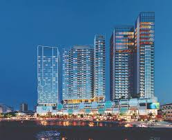
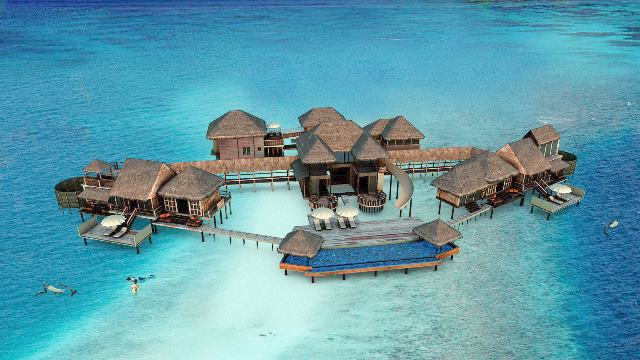

The Maldives’ glow-in-the-dark beaches
As if scenes across the Maldives weren’t stunning enough – sand, sun and blue seas – can you believe some look better after dark?
That’s right! In certain spots in the Maldives, waters actually glow at night. Imagine tiny dots of blue glowing like scattered glitter across the rippling water. The magical sight is caused by the presence of tiny shrimp-like creatures that light up to warn off predators. Call them ‘fireflies of the sea’!
Finding them can be a game of hide and seek, but I know you are an adventurous lot up for the challenge. This bioluminescence, as it’s called, can occur in many of the atolls, but many sightings have been around the eastern cluster that is Rangali, Vaadhoo and Mudhdhoo. Ready to glow?
The Maldives officially the Republic of Maldives, is a South Asian island country, located in the Indian Ocean, situated in the Arabian Sea. It lies southwest of Sri Lanka and India. The chain of 26 atolls stretches from Ihavandhippolhu Atoll in the north to the Addu City in the south. Comprising a territory spanning roughly 298 square kilometres (115 sq mi), the Maldives is one of the world's most geographically dispersed countries, as well as the smallest Asian country by both land area and population, with around 427,756 inhabitants. Malé is the capital and most populated city, traditionally called the "King's Island" for its central location.
The Maldives remained largely unknown to tourists until the early 1970s. Only 185 islands are home to its 300,000 inhabitants. The other islands are used entirely for economic purposes, of which tourism and agriculture are the most dominant. Tourism accounts for 28% of the GDP and more than 60% of the Maldives' foreign exchange receipts. Over 90% of government tax revenue comes from import duties and tourism-related taxes.

Our tour starts with an overview of Male and the harbour area, a very important aspect of any island nation.
Passing by the oldest school in the city, learn about the education system and why the Maldives has a 98% literacy rate. Visit Hukuru Miskiiy - Old Friday Mosque and the tomb of Abu -al - Barakaath and learn why the Maldives converted to Islam and how the Islamic faith underpins everyday life.
Stop for a refreshing cup of traditional black tea at Royal Garden Café, a popular spot for locals. Housed in a rare example of a ‘ganduvaru’ a nobleman’s house, it provides a great example of traditional dark carved wood interiors.
Stopping at the November 3rd Memorial, hear the story of how 8 brave military servicemen died in the protection of their country from a terrorist attack in 1988. Wander through Sultan Park, a reference to the time the Maldives was governed by a sultanate with an optional visit to the National Museum.
Coral Boulevard is the first high-rise mixed-use development in Male, Maldives. Situated on an ideal waterfront location, Coral Boulevard is defined by 4 modern towers rising 28 storeys high, featuring a contemporary hotel, residential apartments and luxurious sky-villa penthouses, with a wide range of resort-style facilities atop a multi-level podium of retail shops, car parks and offices. It aims to provide a combination of waterside serenity with metropolitan lifestyle experience.
Showcasing the essence of water and sky, the modern architectural design of the facade features large glass windows provide sweeping views that emanate natural light into living spaces.
TOP 5 BEST LUXURY RESORTS IN THE MALDIVES
1. Milaidhoo Island Maldives:
opened in November 2016. Nestled within the UNESCO Biosphere Reserve in the Baa Atoll of the Maldives you’ll find 30 over-water villas and 20 additional villas among the tropical greenery along the beach. Each villa comes complete with private freshwater swimming pool and your own personal concierge.
Though the resort is boutique its dining options are on a grand scale. Choose from 3 restaurants and 2 bars throughout your stay. A modern take on “island influenced” cuisine will be offered in the signature restaurant, and the impressive wine list will please any connoisseur.
Idyllic beaches, world famous diving and snorkeling, fishing trips and cultural excursions are just some of the memory-making activities Milaidhoo will offer. This is a place to take it easy and take a dip with your dolphin, whale shark and manta ray neighbors within this protected marine area. Pack your bags, paradise has been found.
2. Soneva Fushi Resort, Maldives
located in the stunning Baa Atoll island archipelago, a UNESCO World Biosphere Reserve. Eco-chic villas are hidden among dense tropical foliage and are the stuff of romantic Robinson Crusoe fantasies. In fact, many are built to resemble tree houses. All open to their own private stretch of sugar white sands, and most boast their own private seawater swimming pools. Service is provided by Mr./Ms. Friday butlers who know what you want before you do!
Activities include a Six Senses spa, private beach with watersports facilities, bikes to borrow, observatory, open-air cinema, floodlit tennis court, badminton, snooker table, group yoga and tai chi classes, jogging trail, board games, ice-cream parlour, library, stash of CDs and DVDs, free WiFi. In rooms: flatscreen TV, DVD player, preloaded iPod and dock, binoculars, air-conditioning, minibar, tea- and coffee-making facilities. The resort can also organise scuba diving, motorised watersports, and local boat trips.

3. Gili Lankanfushi, Maldives
Awarded the TripAdvisor Travellers’ Choice Award of Best Hotel in the World for 2015, Gili Lankanfushi resort is just a short boat ride from Male Airport. With its philosophy of “no news, no shoes”, it’s clear that Gili Lankanfushi prides itself on being a place where you can leave all day to day cares behind and relax.
Choose from luxurious water villas, spacious residences with their own mini wine cellars or impressive complexes that can house all the family or even have their own private gym. Villas on jetty 3 are generally considered to be the most peaceful and boast the best sunset views. Jetty 1 is a great choice if you like the idea of snorkelling right by your villa.
When it comes to dining, there’s a lot of choice at Gili Lankanfushi, not to mention some truly exceptional culinary experiences. Dine on the beach surrounded by lanterns or in the garden where much of the produce is grown.
The stunning pool with its luxurious loungers almost melts into the ocean, and it’s there that you’ll find a lot of the best activities. With the clear waters and abundance of coral, colourful fish, little sharks and rays, even just wading in the shallows is an adventure. For those who want to explore the sea life further, snorkelling and diving are very popular. Gili Lankanfushi is the perfect resort for anyone wanting to discover the breathtaking beauty and total relaxation of the Maldives.
4. Loama Resort Maldives At Maamigili
located on the beautiful Raa Atol which is just 700 meters in length. Easily reached by a 45 minute sea plane journey, the island boasts a long history and several artifacts from the Ching dynasty were unearthed during the construction of the hotel.
Loama Resort Maldives features 105 elegantly appointed beachfront and over-water guestrooms including 5 luxurious suites, each one commanding spectacular views of the shimmering Indian Ocean. Choose between Beach Villas with outdoor deck and private outdoor bathtub nestled amidst lush natural foliage just steps from the Indian Ocean and over-water Ocean Villas built on stilts. Described as “like entering a living rainbow”, when sunlight illuminates the crystal clear waters of the lagoon, a dazzling multi-coloured marine world springs to life. Ocean pool suites have all this as well as a private pool.
There are 6 gastronomic venues at Loama resort which offer a variety of flavours from around the world, from authentic Thai to a delicious barbecue on the beach with spectacular ocean views.
Activities include snorkelling, sunrise and sunset fishing by traditional Dhoni, scuba diving and private island picnics are just some of the other activities on offer. The water sport centre offers kayaks, paddle boards as well as a Jetski.